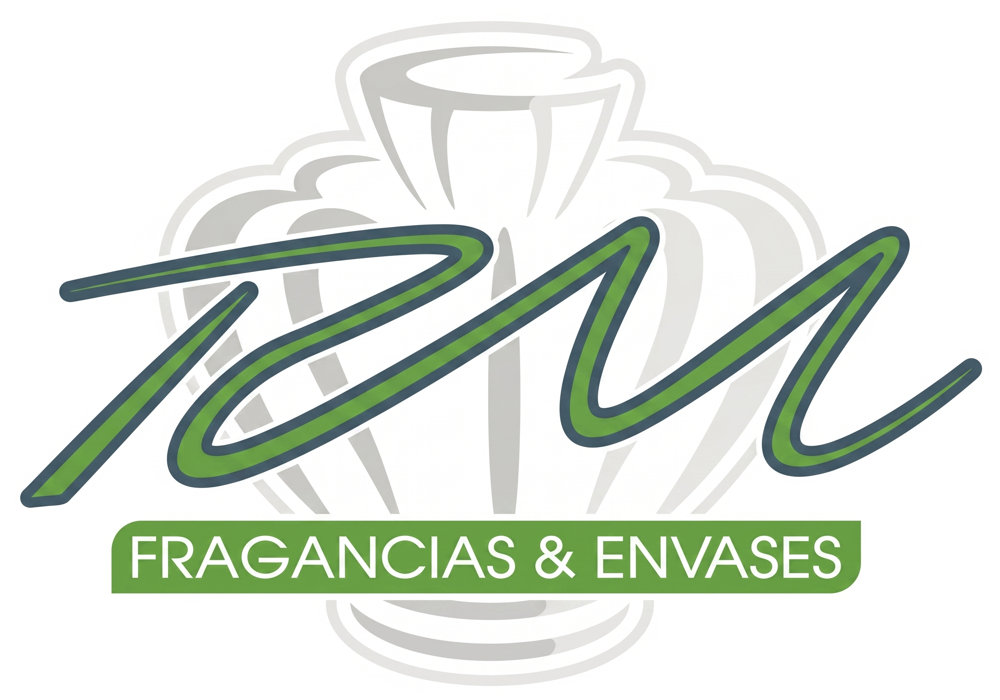

Lujo y distinción en cada gota.
Bienvenidos al corazón de Fragancias RYM. Este documento rige los principios fundamentales de nuestra identidad visual y verbal, garantizando una comunicación coherente, exclusiva y orientada a la excelencia B2B en el mundo de la alta perfumería.
Lujo B2B
Nuestra estética comunica exclusividad corporativa. Diseñados para socios mayoristas, proyectamos un nivel de sofisticación que eleva cualquier portafolio.
Calidad Intransigente
La excelencia no es opcional. Desde los ingredientes hasta cada elemento de esta marca, el rigor y la perfección rigen nuestras decisiones visuales.
Exclusividad
El diseño de Fragancias RYM debe sentirse como un club privado. Espacios amplios, tipografía cuidada y un uso maestro del color corporativo.
2. Logotipo y Construcción
El logotipo de Fragancias RYM es el activo visual más importante de la marca. Su correcta aplicación asegura el reconocimiento y mantiene el estatus de lujo en todos los puntos de contacto corporativos.

Área de Respeto
Para garantizar la óptima legibilidad e impacto del logotipo, siempre se debe mantener un espacio libre (área de respeto) a su alrededor. Este espacio está determinado por la medida "2x" equivalente al doble del alto de la letra de la marca, asegurando que no se vea saturado por otros elementos gráficos o bordes.
Usos Incorrectos
No alterar las proporciones originales del logotipo estrechándolo o alargándolo.
No utilizar colores fuera de la paleta permitida. El verde corporativo #006039 es inalterable.
No aplicar el logotipo sobre fondos complejos o colores que comprometan su legibilidad.
3. Paleta de Colores
Nuestra paleta de colores refleja el lujo, la naturaleza y la exclusividad. El uso consistente de estos tonos es vital para mantener el reconocimiento de marca. Haz clic en cualquier color para copiar su código HEX.
Verde Corporativo
#006039
Principal. Usado en logotipos, fondos clave y botones de acción primaria.
Rosa Complementario
#FCE7F3
Secundario. Elegante contraste para áreas de apoyo y detalles delicados.
Gris Claro
#F9FAFB
Fondo. Proporciona un lienzo limpio y aireado para el contenido extenso.
Gris Oscuro
#1F2937
Texto. Asegura alta legibilidad manteniendo la suavidad frente al negro puro.
4. Tipografía
La familia tipográfica principal es Inter. Una fuente sans-serif moderna, geométrica y altamente legible que transmite una imagen limpia, profesional y contemporánea, ideal para entornos digitales e impresos de alta gama.
Inter
Alfabeto
A B C D E F G H I J K L M N O P Q R S T U V W X Y Z
a b c d e f g h i j k l m n o p q r s t u v w x y z
0 1 2 3 4 5 6 7 8 9
Extra Bold
Uso exclusivo para títulos grandes, llamadas a la acción (CTAs) y destacados de impacto.
Nuevas Fragancias.
Regular
Uso para cuerpo de texto general, párrafos largos y descripciones de producto.
Las notas de salida evocan frescura extrema, perfectas para un mercado selecto.
Light
Uso para subtítulos elegantes, metadatos y notas al pie donde se requiera sutileza.
Colección Exclusiva 2024
5. Voz de Marca
La forma en que nos comunicamos es tan importante como nuestra apariencia visual. Nuestra voz debe transmitir confianza, conocimiento técnico y un profundo respeto por la industria de la perfumería de lujo al por mayor.
Profesional y Técnica
Hablamos con autoridad. Conocemos las notas olfativas, los procesos de maceración y las tendencias del mercado global. Nuestros clientes B2B confían en nuestro expertise.
"Nuestra nueva línea incorpora absoluto de rosa damascena, garantizando una fijación superior de 12 horas, ideal para su segmento premium."
Exclusiva pero Accesible
Proyectamos lujo sin ser arrogantes. Somos un socio estratégico de alto nivel que trata a cada cliente mayorista con extrema cortesía y atención personalizada.
"Le invitamos a descubrir nuestra colección privada. Nuestro equipo de asesores está a su disposición para diseñar una propuesta a la medida de sus boutiques."
Orientada a Resultados B2B
Entendemos que el lujo debe ser rentable para nuestros socios. Comunicamos valor, márgenes atractivos y rotación de inventario con un lenguaje sofisticado.
"Optimice su portafolio comercial con nuestras fragancias de alta rotación, diseñadas para maximizar el margen de beneficio en retail de lujo."
Reglas Básicas
- Hablar de usted (formalidad elegante).
- Usar vocabulario rico (aroma, estela, notas, maceración).
- Evitar jerga informal o términos de "descuento barato".
- No presionar al cliente; nosotros atraemos, no empujamos.